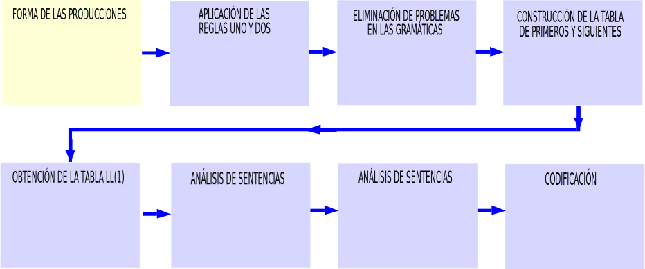

La salida del analizador léxico son los tokens los cuales recibe como entrada el analizador sintáctico. Este analizador va a tener como salida un árbol de análisis sintáctico.
Una gramática formal sirve para reducir la especificación de estas para una manipulación sintetizada, Por lo que se facilita su uso.
Cada una de las partes que componen al cuarteto, son:
| 1 | N es el conjunto de los símbolos no terminales. |
| 2 | T es el conjunto de los símbolos terminales. |
| 3 | P es el conjunto de producciones. |
| 4 | S es el sı́mbolo inicial. |
DEFINICIÓN (Jerarquı́a de Chomsky.)
La gramática 0 o gramática sin restricciones tiene la forma:αAβ → αγβ
, dónde A ∈ N, α, β, γ ∈ V∗ y V es el alfabeto.
La gramática 1 o gramática sensible al contexto tiene la forma:α → β
donde |α| ≤ |β|.
La gramática 2 o gramática libre de contexto tiene la forma:A → α
donde A ∈ N y α ∈ V∗.
La gramática 3 o gramática regular tiene la forma:A → a
oA → aB
que es la forma lineal derecha o bien.A → a
oA → Ba
que es la forma lineal izquierda. Donde A, B ∈ N , a ∈ T∗.
La forma de la producción de la gramática libre de contexto tiene la forma siguiente:
donde A ∈ N y α ∈ V∗.
Como el analizador sintáctico genera un árbol de análisis sintáctico. Se tiene que si el análisis se hace de la raiz a las hojas el análisis es llamado descendente. Si el análisis se hace de las hojas a la raiz el análisis se llama ascendente.

Las gramáticas libres de contexto cuando cumplen las reglas UNO y DOS. Las gramáticas se llaman LL(1).
Cuando la producción tiene alternativas, se aplica la regla correspondiente a la forma que se muestra en la tabla siguiente:
| FORMA DE LA PRODUCCIÓN | NÚMERO DE REGLA |
|---|---|
La regla UNO se aplica a producciones de la forma: A → σ1 | σ2 |
La regla UNO es la siguiente: PRIMERO(σ1) ∩ PRIMERO(σ2) = ∅ |
La regla DOS se aplica a producciones de la forma: X → σ | ε |
La regla DOS es la siguiente: PRIMERO(X) ∩ SIGUIENTE(X) = ∅ |
Si las producciones no cumplen con las reglas. Se tendrán que corregir las producciones de tal manera que se cumplan con las reglas UNO y DOS. Los problemas que se pueden presentar son los que se listan en la siguiente tabla:
La forma general de la recursividad izquierda es la siguiente:
Para eliminar la recursividad izquierda, se hace la siguiente transformación:
La ambigüedad se define como:
DEFINICIÓN (Gramática ambigua.) Si aplicando las producciones de una gramática se obtienen para una cadena por derivación dos árboles sintácticos diferentes.
La ambigüedad se elimina de tres formas:
| NÚMERO | FORMA |
|---|---|
| Uno | Recursividad izquierda. |
| Dos | Reescribiendo la gramática. |
| Tres | Reduciendo la gramática. |
Construir el analizador sintáctico LL(1), utilizando la siguiente gramática:
| 1 | S → uBDz |
| 2 | B → w|Bv |
| 3 | D → EF |
| 4 | E → y| ε |
| 5 | F → x| ε |
En la producción 2 hay un problema de recursividad izquierda. Por lo que se aplica la transformación, haciendo las siguientes igualdades:
Se obtienen los PRIMEROS y SIGUIENTES de la gramática del ejemplo. Los cuales se presentan en la tabla siguiente:
| S | B | B' | D | E | F | |
|---|---|---|---|---|---|---|
| PRIMEROS | u | w,PRIM(B) | v,ε | y,x | y,ε | x,ε |
| SIGUIENTES | $ | y,x,z | y,x,z | z | x,z | z |
La gramática convertida a LL(1), es la que se presenta a continuación:
| 1 | S → uBDz |
| 2 | B → wB' |
| 3 | B' → vB'|ε |
| 4 | D → EF |
| 5 | E → y| ε |
| 6 | F → x| ε |
La tabla de PRIMEROS y SIGUIENTES de la gramática convertida a LL(1), se presenta en seguida:
| S | B | B' | D | E | F | |
|---|---|---|---|---|---|---|
| PRIMEROS | u | w | v,ε | y,x | y,ε | x,ε |
| SIGUIENTES | $ | y,x,z | y,x,z | z | x,z | z |
La gramática expandida, es la siguiente:
| 1 | S → uBDz |
| 2 | B → wB' |
| 3 | B' → vB' |
| 4 | B' → ε |
| 5 | D → EF |
| 6 | E → y |
| 7 | E → ε |
| 8 | F → x |
| 9 | F → ε |
De la gramática expandida y de la tabla de PRIMEROS y SIGUIENTES se obtiene la tabla LL(1), que se expone a continuación:
Simbolos terminales | |||||||
|---|---|---|---|---|---|---|---|
| No terminales | u | v | w | x | y | z | $ |
| S | 1 | e | e | e | e | e | e |
| B | e | e | 2 | e | e | e | e |
| B' | e | 3 | e | 4 | 4 | 4 | e |
| D | e | e | e | 5 | 5 | e | e |
| E | e | e | e | 7 | 6 | 7 | e |
| F | e | e | e | e | 8 | 9 | e |
Para analizar una sentencia uwvyxz$, se usa la tabla LL(1). Este análisis se representa en la tabla siguiente:
Análisis de sentencias | ||
|---|---|---|
| Sentencia de entrada | Pila | Producción |
| ↑uwvyxz$ | $S | 1 |
| ↑uwvyxz$ | $zDBu | ← |
| u↑wvyxz$' | $zDB | 2 |
| u↑wvyxz$ | $zDB'w | ← |
| uw↑vyxz$ | $zDB' | 3 |
| uw↑vyxz$ | $zDB'v | ← |
| uwv↑yxz$ | $zDB' | 4 |
| uwv↑yxz$ | $zD | 5 |
| uwv↑yxz$' | $zFE | 6 |
| uwv↑yxz$ | $zFy | ← |
| uwvy↑xz$ | $zF | 8 |
| uwvy↑xz$ | $zx | ← |
| uwvyx↑z$ | $z | ← |
| uwvyxz↑$ | $ | Aceptación |
Donde la sentencia de entrada se coloca en una lista o en un arreglo. Y la cima de la pila se va analizando de acuerdo a las producciones de la gramática convertida a LL(1):
Codificación del algoritmo LL(1)Token ← SigTok(); PUSH(eof,Pila); PUSH(SimboloInicial,Pila); Cima ← Cima.valor; while True do if Cima == eof ∧ Token == eof then EsEnPan(Sentencia Aceptada); Salir(); if Cima ∈ T ∨ Cima == eof then if Cima == Token then POP(Pila); Token ← SigTok() ; else EsEnPan(Sentencia No Aceptada); else if Cima ∈ N then A ← Leer(T abla[Cima, Token]); k ←| A |; POP(Pila); for i ← k hasta 1 do if B i <> λ then PUSH(B i ,Pila); else EsEnPan(No se puede expandir B i ); Cima ← Cima.valor; |
|
Este analizador, preferiblemente debe usar la gramática LL(1). La gramática LL(1) se expande y se debe aumentar.
Así que la gramática expandida y aumentada es la siguiente;
| NÚMERO | PRODUCCIÓN |
|---|---|
| 0 | S → S' |
| 1 | S → uBDz |
| 2 | B → wB' |
| 3 y 4 | B' → vB'|ε |
| 5 | D → EF |
| 6 y 7 | E → y|ε |
| 8 y 9 | F → x|ε |
Se debe obtener por cada producción una función y usando la tabla de PRIMEROS y SIGUIENTES.
| S' | S | B | B' | D | E | F | |
|---|---|---|---|---|---|---|---|
| PRIMEROS | u | u | w | v,ε | y,x | y,ε | x,ε |
| SIGUIENTES | $ | $ | y,x,z | y,x,z | z | x,z | z |
Para cada producción de la tabla anterior debemos construir una función:
| Producción | Función |
|---|---|
| S' → S | Token ← SigTok(); Fun S'() if (Tok == PRIMERO(S')) then Fun S(); if Tok == eof then EsEnPan(Sentencia Aceptada); else EsEnPan(ERROR); else EsEnPan(Sentencia NO aceptada) ; |
| S → uBDz | Fun S() if (Tok == PRIMERO(S)) then Token ← SigTok(u); Fun B(); Fun D(); Token ← SigTok(z); else EsEnPan(Sentencia NO aceptada) ; |
| B → wB' | Fun B() if (Tok == PRIMERO(B)) then Token ← SigTok(w); Fun B'(); else EsEnPan(Sentencia NO aceptada) ; |
| B' → vB'|ε | Fun B'() if (Tok == PRIMERO(B')) then Token ← SigTok(v); Fun B'(); else if (Tok == SIGUIENTE(B')) then return(); else EsEnPan(Sentencia NO aceptada) ; |
| D → EF | Fun D() if (Tok == PRIMERO(D)) then Fun E(); Fun F(); else EsEnPan(Sentencia NO aceptada) ; |
| E → y|ε | Fun E() if (Tok == PRIMERO(E)) then Token ← SigTok(y); else if Tok == SIGUIENTE(E)) then return(); else EsEnPan(Sentencia NO aceptada) ; |
| F → x|ε | Fun F() if (Tok == PRIMERO(F)) then Token ← SigTok(x); else (if Tok == SIGUIENTE(F)) then return(); else EsEnPan(Sentencia NO aceptada) ; |
Se analiza la sentencia uwvyxz$ con las funciones obtenidas.
| SENTECIA | ACCIÓN |
|---|---|
| uwvyxz$ | Fun S'(u) |
| uwvyxz$ | Fun S(u), acep |
| uwvyxz$ | SigTok(u),Fun B(),Fun D(),SigTok(z), acep |
| uwvyxz$ | SigTok(w),Fun B'(),Fun D(),SigTok(z), acep |
| uwvyxz$ | Fun B'(v),Fun D(),SigTok(z), acep |
| uwvyxz$ | SigTok(v),Fun B'(v),Fun D(),SigTok(z), acep |
| uwvyxz$ | Fun B'(y),Fun D(),SigTok(z), acep |
| uwvyxz$ | Fun D(x),SigTok(z), acep |
| uwvyxz$ | Fun E(x),FunF(),SigTok(z), acep |
Página, archivo html. Procedimiento: COMdefiniciones8.html